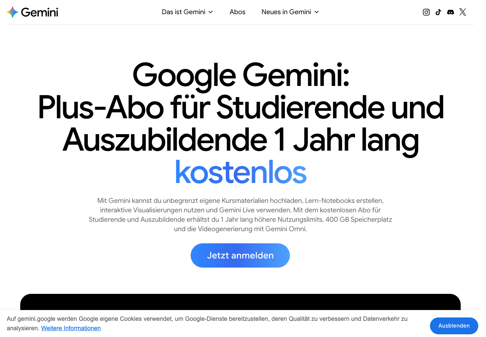
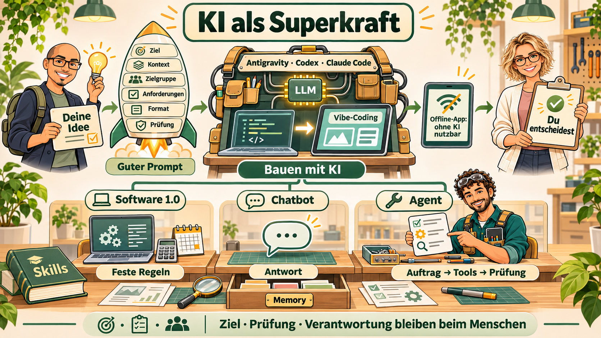
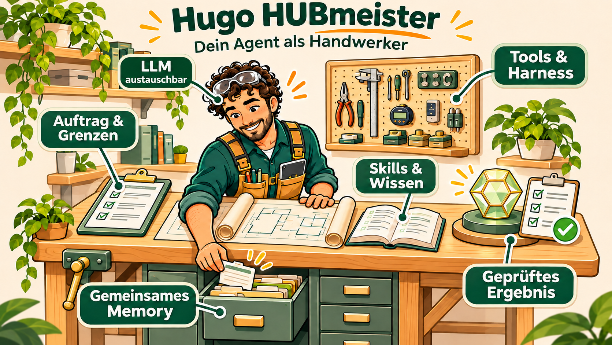
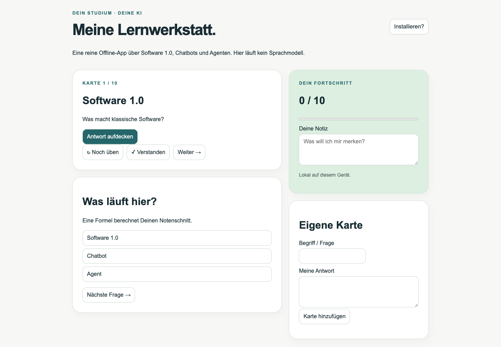
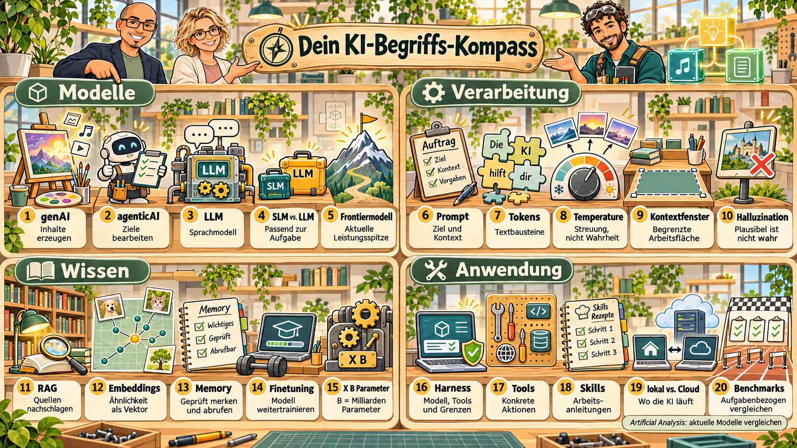

KI als
Superkraft.
Dein Studium.
Deine KI.
Deine Möglichkeiten.
ProfEngel
Dein Studium.
Deine KI.
Deine Möglichkeiten.
ProfEngel
Ohne Konto. Raumcode wird im Vortrag angezeigt.
Offline: Handzeichen oder Selbstquiz.
Die deutsche Angebotsseite nennt aktuell ein kostenloses Jahr für Berechtigte.
Ab 18 · Statusnachweis · Bedingungen und spätere Kosten selbst prüfen.
Stand: 09.11.2026; vor Aktivierung erneut prüfen.

77 Sekunden · manuell starten · Untertitel über CC · Film herunterladen · Untertitel
Feste Regeln verarbeiten Eingaben.
Du wählst den nächsten Schritt.
Eine KI kann die App gebaut haben. Beim Benutzen muss keine KI laufen.
Du fragst. Das Modell formuliert.
In diesem Beispiel setzt Du die Antwort selbst um.
Moderne Chatprodukte können auch Werkzeuge nutzen.
Er verfolgt ein Ziel, wählt erlaubte Tools, schaut nach und prüft die Rückmeldung.
Menschen setzen Ziele, Rechte und Freigaben. Das LLM ist Technik, kein Mensch.

Versteht und plant. Ein kleines Modell kann reichen – erst testen.
Dateien lesen, rechnen, erlaubte Daten ändern. Rechte begrenzen.
Wie arbeiten? Was wissen wir bereits? Geprüfte Inhalte aktiv abrufen.
Harness-Beispiele: Codex, Antigravity, Claude Code.
Nur freigegebener Demoordner; Chat-Abo ≠ API-Budget.

Eine Noten-App berechnet aus Klausurpunkten mit einer fest hinterlegten Formel Deinen Schnitt.
Die Knöpfe links sind das lokale Selbstquiz – keine Saalstatistik. Die echte Abstimmung läuft im separaten Quizfenster.
… lässt fast alles offen.
Karten lernen · Antworten zuordnen · Fortschritt merken · eigene Karten ergänzen.
iPhone/iPad: Safari → Teilen → Zum Home-Bildschirm.
Offline nach dem vollständigen ersten HTTPS-Aufruf.

Ein Agent wählt erlaubte Werkzeuge und prüft ihre Ergebnisse.
Bewusst enger Test: Nur eine exakt gleiche Zeichenfolge passt.
Ist anders formuliert automatisch falsch?
Nein. Klassische Software kann auch bessere Regeln haben. Für offene Bedeutung kann ein Modell helfen – mit Prüfung.
Nachschlagen → entscheiden → erlaubtes Werkzeug → Ergebnis prüfen.
Lerncoach: passende Fragen statt nur fertiger Antworten.
Quellencheck: Belege finden, offene Stellen sichtbar machen.
Unternehmen vergleichen und gute Gesprächsfragen vorbereiten.
Nicht: „Was kann KI alles?“
Sondern: „Welches kleine Problem will ich lösen?“
Der erste Agent bekommt eine Kachel im Hub. Weitere kommen bei Bedarf dazu.
Alle nutzen freigegebenes gemeinsames Memory: erst nachschlagen, dann geprüftes Wissen ergänzen.
Nach jedem Ausbau: Funktion, Grenzen und IT-Sicherheit testen.


genAI: Erzeugt aus einem Auftrag neue Texte, Bilder, Audio oder Code – Ergebnisse prüfen.
agenticAI: Verfolgt ein Ziel, wählt erlaubte Schritte und Werkzeuge und prüft deren Rückmeldung.
LLM: Ein großes Sprachmodell verarbeitet und erzeugt Sprache; es ist nicht der ganze Agent.
SLM vs. LLM: Kleinere und größere Sprachmodelle passen zu unterschiedlichen Aufgaben; es gibt keine allgemein verbindliche Größengrenze.
Frontiermodell: Ein Modell an der aktuellen Leistungsgrenze wichtiger Aufgaben – kein dauerhafter Titel oder Qualitätsversprechen für alles.
Prompt: Beschreibt Ziel, Kontext, Anforderungen und gewünschtes Ergebnis; gute Prüffälle helfen beim Nachbessern.
Tokens: Modelle verarbeiten Text in Bausteinen; ein Token ist nicht immer ein ganzes Wort.
Temperature: Verändert bei unterstützten Modellen die Streuung der Auswahl; ist kein Regler für Wahrheit oder Intelligenz.
Kontextfenster: Begrenzt, wie viele Tokens in einem Durchlauf berücksichtigt werden können; ist nicht dasselbe wie dauerhaftes Memory.
Halluzination: Wahrscheinliche Fortsetzungen können plausibel und trotzdem falsch sein; fehlende Belege, Wissen und Kontext spielen ebenfalls eine Rolle.
RAG: Passende Quellen werden gesucht und für die Antwort mitgegeben, ohne dafür das Sprachmodell neu zu trainieren.
Embeddings: Stellen Inhalte als Zahlenvektoren dar, um zum Beispiel ähnliche Textstellen zu finden; Nähe ist keine Wahrheitsgarantie.
Memory: Bewahrt freigegebene Informationen über Aufgaben hinweg und wird bei Bedarf aktiv abgefragt.
Finetuning: Passt Modellgewichte oder Adapter mit Beispielen an; ist etwas anderes als Dokumente in den Chat zu laden.
X B Parameter: B steht für billion: eine Milliarde. 8B bedeutet acht Milliarden Modellparameter, nicht acht Milliarden Fakten; Größe allein ist kein Qualitätsmaß.
Harness: Verbindet Modell, Werkzeuge, Dateien, Abläufe und Rechte – etwa in Codex, Antigravity oder Claude Code.
Tools: Führen konkrete Operationen aus, etwa rechnen, Dateien lesen oder einen erlaubten Lernstand ändern.
Skills: Beschreiben wiederverwendbare Fähigkeiten und Vorgehensweisen; ein Skill allein ist noch kein vollständiger Agent.
lokal vs. Cloud: Ausführung auf eigener Hardware oder beim Anbieter; Datenschutz, Leistung, Aufwand und Kosten hängen von der gesamten Konfiguration ab.
Benchmarks / Artificial Analysis: Vergleichen Modelle an bestimmten Aufgaben. Artificial Analysis hilft, aktuelle Leistung einzuordnen; den eigenen Anwendungsfall zusätzlich testen.
„Die eigentliche Superkraft ist nicht die KI. Es ist das, was DU mit ihr möglich machst.“
Lernwerkstatt öffnen · Bau-Prompt
KI-generierte Bilder sind didaktische Metaphern. Kein Produktivitätsnachweis und kein Ersatz für eigene Prüfungen.